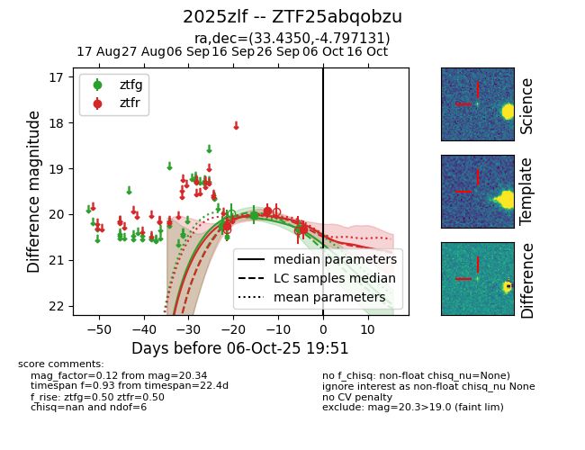
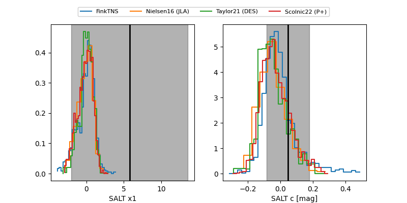

FINK: ZTF25abqobzu
Lasair: ZTF25abqobzu
ALeRCE: ZTF25abqobzu
TNS: 2025zlf
YSE: 2025zlf
ZTF25abqobzu (ztf,fink)
2025zlf (tns,yse)
equatorial (ra, dec) = (33.4350,-4.79713)
galactic (l, b) = (167.8697,-60.27666)


last ztfg=20.32, ztfr=20.34
3 ztfg, 3 ztfr detections